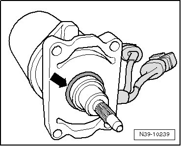
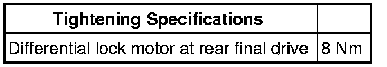

Differential Lock Motor
Differential Lock Motor
Special tools, testers and auxiliary items required
• Torque wrench (VAG 1331)
Removing
- Separate the two connectors at differential lock motor.
- Remove the differential lock motor - A - with holder for connector - B -, thereby removing the four bolts.

Installing
- Replace O-ring - arrow - on differential lock motor

• Differential lock motor is delivered as a replacement part with O-ring installed.
• O-ring is secured with a protective sleeve.
• You must remove protective sleeve before installing differential lock motor.
- Set the differential lock motor - A - with holder for connector - B - into the rear final drive, and install the four bolts.
- Connect the two connectors at differential lock motor.
- Checking gear oil in rear final drive. Refer to --> [ Gear Oil, Checking ] Gear Oil, Checking.
